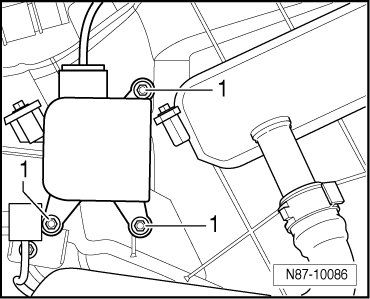

Left Rear Air Door
Door Motors
Left Rear Air Door
Removing
- Bring rear heating and air conditioning unit into service position. Refer to--> [ Second Rear Heating and A/C Unit, Service Position ] Second Rear Heating and A/C Unit, Service Position
- Remove nuts - 1 -.

- Disconnect connector at Left Rear Air Door Motor (V239) and remove control motor.
Installing
Installation is carried out in the reverse order, when doing this note the following:
- Initiate Basic Setting function with Diagnostic Operation System (VAS 5051B). Refer to--> [ Climatronic A/C System with Automatic Control, Checking and Adjusting ] Climatronic A/C System with Automatic Control, Checking and Adjusting.
• Hose to water drain valve must not be kinked or pinched. Refer to --> [ Rear Condensation Water Hose with Valve, Checking ] Rear Condensation Water Hose with Valve, Checking.